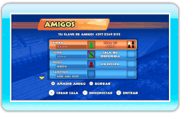
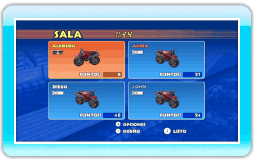
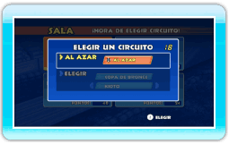
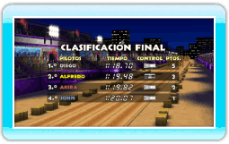

18 |
Cómo jugar con amigos |
 |
|
El modo Con amigos te permite competir contra tus amigos mediante la Conexión Wi-Fi de Nintendo.
La pantalla de amigos muestra el estado de los amigos que has registrado (más información acerca del estado a continuación). Para unirte a una carrera, selecciona un amigo que tenga una sala abierta y pulsa
 . Para crear una sala, pulsa . Para crear una sala, pulsa  y espera a que se unan tus amigos. y espera a que se unan tus amigos.
Pulsa
 en la pantalla de la sala para seleccionar un diseño para tu moto y pulsa para confirmar tu elección. Si decides no competir, pulsa en la pantalla de la sala para seleccionar un diseño para tu moto y pulsa para confirmar tu elección. Si decides no competir, pulsa  para acceder al menú de opciones de sala y, a continuación, selecciona ABANDONAR SALA. para acceder al menú de opciones de sala y, a continuación, selecciona ABANDONAR SALA.
Selecciona un circuito que hayas desbloqueado en el modo Campeonato o uno que hayas creado con el editor, o bien selecciona AL AZAR. Cuando todos los pilotos hayan seleccionado un circuito, se elegirá uno de esos circuitos al azar.
Al finalizar la carrera, recibirás puntos del modo Con amigos en relación con la posición que alcances en la clasificación final. ¡Trata de conseguir los puntos necesarios para desbloquear diseños exclusivos para tu moto!
|
 |
 |
 |